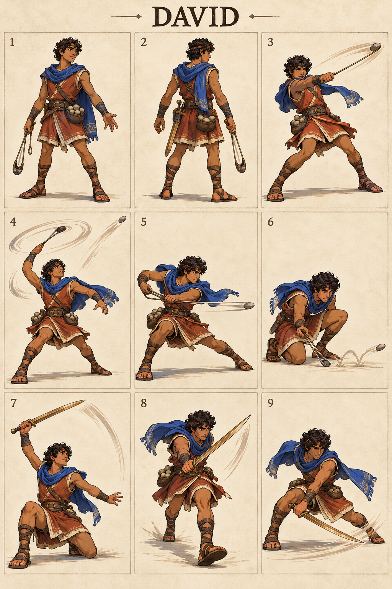

David
1024 × 1536 · Concept reference
Move panel key
- Idle / identity
- Back turnaround
- Ordinary Light example
- Sling — Skyward Stone
- Sling — Valley Line
- Sling — Shepherd Skip
- Sword — Rising Courage
- Sword — Forward Resolve
- Sword — Guarded Sweep